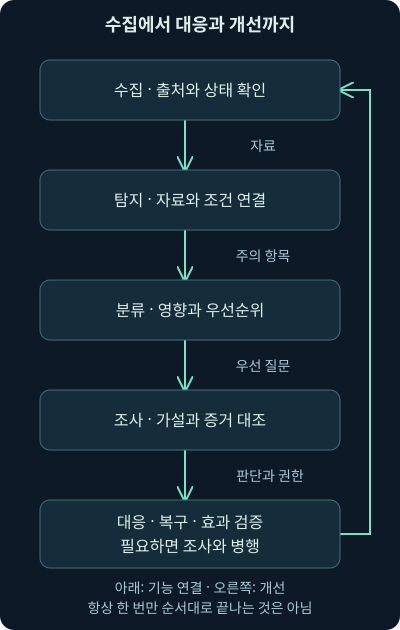
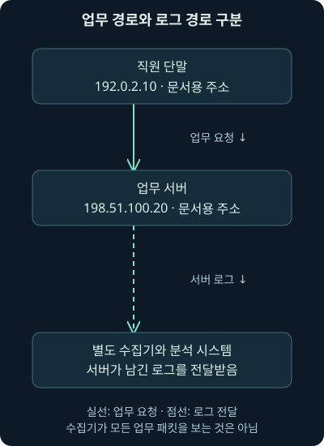
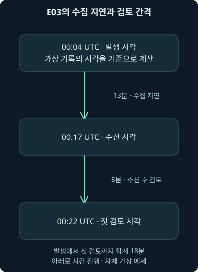
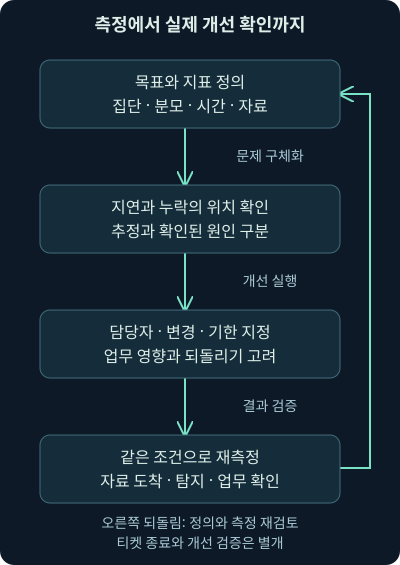

SOC 운영 흐름과 분석가의 협업
첫째 날 4강. 수집·탐지·분류·조사·대응의 입력과 결과를 읽고, 관측 한계·운영 문서·자체 CSV 지표 계산을 연결합니다.
1. 경보 하나가 처리되기까지의 길
어제 교대 담당자가 “중요 서버 경보는 확인했습니다”라고 말합니다. 그런데 경보가 발생한 시각, 시스템에 도착한 시각, 사람이 처음 확인한 시각이 서로 다릅니다. 수집이 늦었던 것인지, 경보를 고르는 데 시간이 걸렸던 것인지 알 수 없으면 개선하기 어렵겠죠.
3강에서 우리는 SOC의 역할과 권한을 나누었습니다. 이번 4강에서는 수집 → 탐지 → 우선 분류 → 조사 → 대응·복구의 연결을 살펴봅니다. 단계별 입력과 결과, 필요한 문서와 협업, 실제로 계산할 수 있는 운영 지표를 배웁니다. 단계는 이해를 위한 구분이며 실제 사건에서 반드시 한 번씩만 순서대로 끝나는 것은 아닙니다.
여기 나오는 사건과 CSV 기록은 모두 자체 가상 예제입니다. 실제 네트워크나 기업의 로그가 아닙니다. 뒤의 CSV 계산은 로컬에서 직접 실행해 확인했지만 VM·침해 시뮬레이션·패킷 분석·보안 장비 조치는 실행하지 않았습니다.
2. 복잡한 도구를 입력·처리·결과로 나누어 보기
택배 분류기를 떠올려 보세요. 상자와 목적지 정보가 들어가고 내부에서 규칙에 따라 분류되어, 다음 운송 경로로 나갑니다. 상자 표시가 틀렸다면 좋은 기계도 엉뚱한 곳으로 보낼 수 있습니다. 반대로 입력이 좋아도 분류 규칙이 잘못되면 결과가 나빠집니다.
보안 도구도 입력, 내부 처리, 밖으로 전달하는 결과를 나누어 보면 역할을 이해하기 쉽습니다. 예를 들어 탐지 도구에는 관측 자료와 탐지 논리가 필요하며, 그 조건에 맞는 항목이 경보로 나올 수 있습니다. 무엇이 입력되지 않았고 어떤 처리가 적용되지 않았는지 확인해야 결과의 범위를 알 수 있습니다.
비유와 실제 시스템은 다릅니다. 기록 하나가 여러 탐지에 쓰이거나, 여러 기록을 묶어 한 경보를 만들 수 있습니다. 자료가 늦게 들어와 나중에 결과를 바꿀 수도 있습니다. 자동화와 사람의 판단이 섞여 있으므로 상자가 한 번 지나가는 공정으로만 생각하지 않습니다.

그림의 각 상자를 “그다음 사람에게 무엇을 주나?”라는 질문으로 읽어 보세요. 수집량이나 경보 수만 늘어나는 것보다, 조사와 필요한 행동에 쓸 수 있는 결과가 나오는지가 중요합니다.
3. 수집: 일어난 일과 받은 기록은 같지 않습니다
수집은 단말·서버·네트워크·애플리케이션 등의 기록을 조사에 사용할 수 있게 확보하는 활동입니다. 애플리케이션은 주문 처리나 메일처럼 특정 일을 수행하는 프로그램입니다. 기록이 생성되었더라도 전송 실패·저장 용량·권한·설정 문제로 분석 시스템에 도착하지 않을 수 있습니다.
먼저 사건이 일어난 시각과 수집 시스템이 받은 시각을 나누어 봅니다. 원래 장치의 시계가 정확한지도 확인합니다. 2강에서 배운 시간대와 시계 오차가 여기서 다시 필요합니다. 같은 UTC 표기라고 해서 시계가 정확하다는 보장은 없습니다.
자료가 들어오면 필요한 필드를 읽는 과정도 있습니다. 필드는 시각·계정·주소·결과처럼 기록의 각 항목입니다. 파서가 업데이트 뒤 바뀐 형식을 잘못 읽으면 계정이 비거나 시각이 틀릴 수 있습니다. 원본은 있었지만 분석 화면에 제대로 표시되지 않는 상황도 분리해야 합니다.
4. 탐지: 자료와 질문이 함께 있어야 합니다
탐지는 자료에서 주의가 필요한 조건을 찾아 표시하는 일입니다. 시그니처는 특정 특징을 찾는 표현이나 조건이고, 다른 탐지는 시간에 따른 반복·여러 사건의 관계·평소와 다른 행위를 이용할 수 있습니다. 모든 탐지가 단순 문자열 검색은 아닙니다.
IDS는 침입 탐지 시스템을 뜻합니다. 네트워크 IDS라면 전달받은 패킷을 분석하고 조건이 맞는 항목을 경보로 만들 수 있습니다. SIEM은 여러 출처의 보안 기록을 모아 검색·연결·탐지하는 체계입니다. 제품마다 범위가 다르므로 이름보다 어떤 입력과 조건으로 결과를 내는지 확인하세요.
로그인 실패를 찾는 탐지에 계정 필드가 빠진 기록이 들어오면 어떤 일이 생길까요? 잘못 묶이거나 조건에 맞지 않아 빠질 수 있습니다. 암호화된 통신의 본문을 볼 수 없는 센서에 본문 문자열 탐지를 적용해도 같은 문제가 생깁니다. 도구가 정상 실행되었다는 사실과 필요한 행위를 탐지할 수 있었다는 사실은 다릅니다.
5. 경보의 빈칸을 정상으로 해석하지 않기
경보가 없을 때는 여러 가능성이 있습니다. 관측 범위에서 조건에 맞는 행위가 없었거나, 자료가 수집되지 않았거나, 필드와 탐지 조건이 맞지 않았거나, 해당 탐지가 꺼졌을 수 있습니다. 수집이 일부만 이루어지는 샘플링이나 저장 기간도 결과에 영향을 줍니다.
따라서 탐지 결과와 수집 상태를 함께 봅니다. 필요한 장치의 마지막 기록 시각, 평소 대비 기록량, 파싱 오류, 규칙의 활성화와 적용 범위를 확인합니다. 정상 작업이 없는 조용한 시간과 전송이 끊긴 상태는 같은 숫자 0으로 보일 수 있습니다.
통신의 방향도 중요합니다. 요청만 수집되고 응답이 빠지거나, 내부 서버끼리의 경로가 센서를 지나지 않을 수 있습니다. 패킷의 일부 조각을 다시 묶는 재조립 설정에 따라 내용 해석이 달라질 수도 있습니다. 구체적인 설정은 둘째 날에 배우고, 지금은 결과가 도구·위치·조건에 의존한다는 점을 기억하세요.
6. 우선 분류: 가장 많이 울린 것이 가장 급할까요?
여러 경보 중 어디부터 볼지 정하는 활동을 트리아지, 즉 초기 우선 분류라고 합니다. 경보의 점수만 보는 일이 아닙니다. 중요한 자산인지, 성공이나 영향 징후가 있는지, 지금도 진행 중인지, 관련 경보가 무엇인지 함께 봅니다.
가상 사례로 일반 PC의 반복 실패와 중요 결제 서버의 낯선 인증 성공이 동시에 올라옵니다. 후자가 먼저 보일 수 있지만, 실패가 실제 서비스 중단을 일으키고 있다면 판단이 달라집니다. 3강에서 파악한 업무·소유자·위험 기준이 이때 입력 자료가 됩니다.
보강은 자산 중요도나 소유자 같은 맥락을 기록에 더하는 일입니다. 오래된 소유자 정보로 잘못 연락하거나 폐기된 자산을 중요하게 표시하면 오히려 지연될 수 있습니다. 보강 정보의 출처와 갱신일도 함께 확인해야 합니다.
7. 조사: 가설을 확인하고 다른 설명도 찾기
우선 볼 경보를 고른 뒤에는 무엇이 실제로 있었는지 조사합니다. “낯선 인증이 비인가 사용일 수 있다”는 가설과 “승인된 유지보수일 수 있다”는 다른 설명을 놓고 필요한 증거를 찾습니다. 처음 눈에 들어온 설명만 뒷받침하는 자료를 모으면 판단이 치우칠 수 있습니다.
단말의 실행 기록, 인증 서버의 성공·실패, 업무 시스템의 자료 접근, 방화벽과 이름 조회를 처리하는 리졸버의 기록은 서로 다른 부분을 보여 줍니다. 리졸버는 이름 조회 요청을 처리하는 구성 요소입니다. 같은 계정·단말·시간으로 연결하되 주소 공유나 시계 오차 때문에 잘못 묶이지 않았는지 확인합니다.
조사의 결과는 무조건 “공격” 또는 “정상” 두 칸으로만 끝나지 않습니다. 정상 작업으로 확인한 경우, 정책 위반이지만 침해 증거는 없는 경우, 수집이 부족해 미확인인 경우를 구분할 수 있습니다. 현재 판단과 남은 질문, 다음 담당자를 함께 남기세요.
8. 대응은 모든 조사가 끝날 때까지 기다리는 단계일까요?
사건이 확인되면 확산을 억제하고 원인을 제거하며 복구하는 활동이 필요합니다. 확산 억제는 더 큰 피해를 막기 위해 접근·연결·계정 등을 제한하는 것이고, 원인 제거는 악성 구성이나 부적절한 접근의 원인을 처리하는 활동입니다. 복구에서는 서비스와 자료가 믿을 만한 상태인지 검증합니다.
실제 사건은 조사와 대응이 겹칩니다. 피해가 계속 커진다면 모든 사실이 확정되기 전에 정해진 권한과 근거로 임시 보호를 할 수 있습니다. 이때 왜 그 조치가 필요했는지, 무엇을 알고 무엇을 몰랐는지, 업무와 증거에 어떤 영향을 줄 수 있는지를 남겨야 합니다.
과거의 단순한 순서도를 “완전한 조사 종료 후에만 대응 시작”이라는 규칙으로 쓰지 않겠습니다. 2026년 11월 4일 확인한 NIST SP 800-61 Rev. 3은 2025년 4월의 개정 문서로, 사고 대응을 더 넓은 위험 관리와 연결합니다. 이 강의의 화살표는 이해를 돕는 기능 구분이며 모든 상황을 고정된 한 줄로 제한하지 않습니다.
9. 주변 전문 기능은 어느 단계에 도움을 주나요?
위협 인텔리전스는 위협에 관한 자료를 맥락과 분석을 더해 의사결정에 쓸 수 있게 만드는 활동입니다. 탐지 조건을 만들거나 사건의 행동 가설을 세우는 데 도움을 줄 수 있습니다. 의심 주소 목록에 있다는 이유만으로 해당 연결의 주체나 침해 성공을 확정하지 않습니다.
디지털 포렌식은 디지털 흔적을 보존·분석해 무엇이 있었는지 밝히는 전문 활동입니다. 파일·메모리·저장 장치·클라우드 자료 등이 대상이 될 수 있습니다. 깊은 분석을 돕지만 모든 사건에서 모든 종류의 포렌식을 해야 한다는 뜻은 아닙니다. 필요한 질문과 증거의 중요도에 맞추어 요청합니다.
의심 프로그램의 구조와 기능을 분석하는 역공학, 법적 절차 등에 필요한 디지털 자료의 수집·검토도 관련 전문 영역이 될 수 있습니다. 조사 질문과 권한·보존 요구가 다르므로 일반 경보 처리와 같은 절차라고 가정하지 않습니다. 민감한 자료나 미지의 프로그램을 다루는 전문 분석에는 별도의 환경과 담당 역량이 필요합니다.
자체 점검은 자산·설정·취약점·방어의 동작을 살펴보는 활동을 포함합니다. 취약점 평가는 약점을 찾고, 허가된 모의 검증은 정해진 범위에서 통제가 작동하는지 확인할 수 있습니다. 취약점이 있다는 것과 실제 침해가 일어났다는 것은 구별해야 합니다. 어느 팀 아래에 있든 SOC와 결과를 연결할 경로가 필요합니다.
모의 검증 중 침투 테스트는 약점과 가능한 영향 경로를 검증하고, 레드팀 평가는 합의한 목표와 범위에서 공격 행동을 모의해 방어의 발견·대응까지 살필 수 있습니다. 조직마다 범위가 다르므로 사전 승인과 시험 조건을 확인합니다. 여기서 그 시험을 실행했다는 뜻은 아닙니다.
10. 실제 통신 경로와 로그 경로를 따로 그립시다
업무 통신은 직원 PC에서 내부 서버로 갈 수 있고, 로그는 그 서버에서 별도 수집기로 전송될 수 있습니다. 수집기는 여러 장치의 기록을 받는 구성 요소입니다. 두 경로를 한 그림에 섞으면 “수집 서버가 패킷을 모두 본다”는 오해가 생깁니다.
가상 단말 192.0.2.10이 업무 서버 198.51.100.20에 접속한다고 합시다. 주소는 모두 문서용 예제이며 실제 접속 대상이 아닙니다. 경로 중간에서 패킷을 복사할 수도 있고, 서버가 남긴 요청 기록만 받을 수도 있습니다. 기록 종류가 다르면 답할 수 있는 질문도 다릅니다.

그림에서 로그가 모이는 아래쪽 경로를 업무 트래픽의 통과 경로로 읽지 마세요. 요청 기록에는 응용 프로그램이 처리한 내용이 남을 수 있지만 패킷 원본의 모든 필드가 남는 것은 아닙니다. 반대로 패킷만 있으면 서버의 내부 권한 판단까지 모두 알 수 있는 것도 아닙니다.
11. 관측 지도를 조사 문장으로 바꾸기
분석가가 자주 해야 할 질문은 “그 행위가 있었다면 우리가 볼 수 있었을까?”입니다. 센서 위치뿐 아니라 기록 종류·내용·기간·저장과 파싱 상태를 함께 확인해야 답할 수 있습니다. 센서가 있다고 모든 트래픽이 그 앞을 지나는 것은 아닙니다.
예를 들어 내부 서버끼리의 통신은 인터넷 출구 방화벽을 지나지 않을 수 있습니다. 출구 기록에 없다는 결과를 내부 이동의 부재로 쓰면 안 됩니다. 암호화된 연결에서는 접속 상대·시간·양은 보여도 내용은 안 보일 수 있고, 응용 프로그램 기록에서만 의미를 확인할 수도 있습니다.
조사 기록에는 “이 센서의 이 기간과 이 조건에서는 찾지 못했다”라고 적고 대조할 자료를 남깁니다. 자료가 없었다면 수집 실패인지 대상 시스템에서 애초에 생성하지 않는 기록인지도 구분합니다. 이 차이가 다음에 수집 설계를 고칠지, 다른 증거를 찾을지를 결정합니다.
12. 사건 전에 준비해야 하는 문서 묶음
급할 때 담당자 번호나 네트워크 지도를 처음 찾으면 늦습니다. 단순한 최신 네트워크 구성도, 실제 데이터 흐름과 관측 위치, 로그 흐름과 보존 기간, 중요 자산과 소유자가 기본 자료가 됩니다. 자료의 최종 확인일과 책임자도 필요합니다.
사고 대응 계획은 누가 어떤 조건에서 조정·조치·보고할지 정합니다. 의사소통 계획은 누구에게 언제 어떤 내용을 어떤 경로로 전할지 정합니다. 일반 업무 메신저를 사용할 수 없거나 신뢰하기 어려운 경우의 대체 연락 경로도 준비할 수 있습니다. 이 강의에서 실제 메시지를 보내거나 외부 담당자에게 연락한 것은 아닙니다.
업무 연속성 계획은 중요한 업무를 어떻게 계속할지 다루고, 재해 복구 계획은 시스템·자료의 복원을 어떻게 수행할지 다룹니다. 범위와 이름은 조직마다 다르지만, 정상 운영 담당자가 검증에 참여해야 하는 이유를 이해하면 됩니다. 복구 파일이 있다는 사실과 실제 업무 복원이 가능하다는 사실도 구분합니다.
13. 정책과 표준은 무엇이 다를까요?
가상 회사가 “중요 계정 활동을 기록하고 정해진 기간 보존한다”고 방향을 정했다고 합시다. 이것은 정책에 가까운 문장입니다. 어떤 대상·필드·시간 기준·최소 기간을 따를지 구체화한 문서는 표준 역할을 합니다. 조직 안에서 승인된 정책·표준은 보통 준수해야 하는 기준입니다.
반면 관리자가 실제로 어떤 화면에서 무엇을 켜고 확인하는지 단계별로 설명한 것이 절차입니다. “설정 저장”에서 끝내지 않고 테스트 기록이 수집되는지 검증하는 단계까지 있어야 합니다. 문서가 서로 연결되면 목표에서 실제 동작까지 추적할 수 있습니다.
이름만으로 의무 여부를 결정하지 마세요. 외부 표준은 조직이 채택한 범위와 적용 조건을 확인해야 하고, 내부의 ‘가이드’라는 문서도 승인 방식에 따라 필수 조건을 담을 수 있습니다. 문서의 소유자·승인·적용 범위·예외 절차를 함께 읽습니다.
14. 가이드·기준 구성·유스케이스·플레이북 연결하기
가이드라인은 보통 선택과 적용을 돕는 권고입니다. 기준 구성, baseline은 특정 제품과 버전에 대해 확인할 설정의 기준점을 뜻합니다. 보안 설정을 강화하는 권고도 제품 버전과 업무 영향에 맞춰 시험해야 합니다. 과거의 설정 목록을 새 운영체제에 그대로 적용한다고 안전해지지 않습니다.
유스케이스는 탐지가 필요한 이유·대상·자료·논리·예상 결과를 묶어 설명하는 데 쓰입니다. 플레이북은 특정 상황의 조사·대응 흐름이나 자동화 절차를 뜻할 수 있습니다. 조직에 따라 두 용어를 섞어 쓰므로 제목보다 그 문서가 어떤 판단과 행동을 설명하는지 봅니다.
| 문서의 역할 | 가상 중요 계정 사례 | 검증할 연결 |
|---|---|---|
| 정책 | 중요 활동을 기록하고 검토한다 | 대상과 책임이 정해졌는가? |
| 표준 | 필요한 필드·시간·보존 조건 | 실제 자료에 항목이 있는가? |
| 절차 | 수집 설정과 확인 순서 | 테스트 이벤트가 도착하는가? |
| 기준 구성 | 제품·버전에 맞는 설정값 | 적용 범위와 예외·부작용 |
| 유스케이스 | 낯선 인증 뒤 중요 변경 탐지 | 입력·논리·정상 예외·한계 |
| 플레이북 | 확인·인계·승인·임시 조치 | 권한·중단·결과 검증 |
2026년 11월 4일 확인: CIS Benchmarks FAQ는 제품별 보안 구성 권고와 적용 전 시험 환경에서의 영향 확인을 설명합니다. 이를 조직의 승인된 기준으로 채택할 때는 적용 제품·버전·예외를 기록해야 합니다. 이 강의는 특정 벤치마크를 실제 환경에 적용한 결과가 아닙니다.
15. 인계할 때는 판단의 상태를 같이 보냅니다
3강에서 역할 간 인계를 배웠습니다. 기능의 관점에서는 입력을 전달하는 계약으로 볼 수 있습니다. 사건 식별자, 대상과 기간, 자료 위치와 조회 조건, 관측·가설·미확인 사항, 지금까지의 조치와 필요한 다음 결정을 함께 넘깁니다.
다음 담당자가 확인했다는 상태와 실제 조치를 끝냈다는 상태도 나누어야 합니다. “요청 전달”, “담당자 접수”, “조치 실행”, “효과 검증”은 다른 결과입니다. 티켓 시스템이 자동으로 닫혔다고 마지막 결과가 보장되지 않습니다.
중복 경보를 하나의 사건으로 묶더라도 원래 경보와 시간·대상의 연결은 남깁니다. 묶는 조건을 바꾸면 통계의 분모도 바뀔 수 있습니다. 단순히 경보 수가 줄었다는 이유로 탐지 품질이 좋아졌다고 말하지 않습니다.
16. 이해관계자에게 필요한 내용은 다릅니다
분석가는 원본 기록과 가설을 자세히 보고 싶습니다. 시스템 담당자는 어떤 경로와 계정을 제한해야 하는지, 운영 책임자는 업무 영향과 선택지·승인 요청을 알고 싶습니다. 이해관계자는 그 판단과 행동에 영향을 주거나 영향을 받는 사람을 말합니다.
같은 사실을 상대의 결정에 맞게 설명하되 확실성은 바꾸지 않습니다. 아직 자료 유출을 확인하지 못했다면 경영진 보고에서도 확정된 것처럼 쓰지 않습니다. 반대로 세부 기술 표현에 가려 현재 업무 영향과 필요한 결정을 빼놓지도 마세요.
보고에는 현재까지 확인한 범위, 진행 중인 보호 조치, 남은 질문, 다음 갱신 시각을 포함할 수 있습니다. 보고 주기와 외부 통지는 조직의 계획과 담당 권한을 따릅니다. 공개 문서에 불필요한 비밀번호·인증 토큰·개인 자료를 그대로 넣지 않습니다.
17. 지표는 목표와 질문에서 시작합니다
지표는 운영 상태나 결과를 판단하기 위해 정의해서 측정하는 값입니다. “경보를 몇 개 닫았나?”를 먼저 고르면 빨리 종료하는 행동만 늘 수 있습니다. 대신 “중요 업무의 이상을 제때 확인할 수 있나?”라는 목표와 질문에서 시작해 봅시다.
다음에는 어떤 사건을 포함하고 어느 시각부터 무엇까지 잴지 정합니다. 분모·분자·시간 단위·제외 조건·미완료 항목·자료 출처·갱신 시점을 정의해야 두 사람이 같은 값을 구할 수 있습니다. 변화가 생기면 누가 무슨 행동을 할지도 정해야 측정이 개선으로 이어집니다.
공식 근거 확인 — 2026년 11월 4일: NIST SP 800-55 Volume 1과 2는 2024년 12월 발행 문서로, 측정값의 식별·선정과 측정 프로그램 구성을 다룹니다. Volume 1, Volume 2를 대조했습니다. 아래 15분과 비율은 자체 예제이며 NIST가 요구하는 공통 성능 기준이 아닙니다.
18. 가상 기록 여섯 줄을 읽어 봅시다
아래는 자체 작성한 CSV입니다. CSV는 쉼표 등으로 항목을 나누어 표 형태로 저장하는 텍스트 형식입니다. 각 행은 가상 경보 한 건이며 실제 공격·성공 판정을 뜻하지 않습니다. critical은 이 예제에서 정한 중요 분류이고 standard는 일반 분류입니다.
event_time은 기록에 적힌 발생 시각, received_time은 경보를 받은 시각, first_review는 첫 검토 시각입니다. 모두 UTC이며 뒤의 Z가 그 기준을 나타냅니다. 빈 마지막 필드는 아직 첫 검토가 기록되지 않았다는 뜻입니다. 실제로 사람이 아무 행동도 안 했는지는 다른 기록과 대조해야 합니다.
event_id,asset,importance,event_time,received_time,first_review
E01,PAY-01,critical,2026-11-04T00:00:00Z,2026-11-04T00:02:00Z,2026-11-04T00:06:00Z
E02,WS-08,standard,2026-11-04T00:01:00Z,2026-11-04T00:03:00Z,2026-11-04T00:20:00Z
E03,PAY-01,critical,2026-11-04T00:04:00Z,2026-11-04T00:17:00Z,2026-11-04T00:22:00Z
E04,API-02,critical,2026-11-04T00:05:00Z,2026-11-04T00:06:00Z,2026-11-04T00:10:00Z
E05,PAY-02,critical,2026-11-04T00:07:00Z,2026-11-04T00:08:00Z,
E06,PAY-02,critical,2026-11-04T00:10:00Z,2026-11-04T00:11:00Z,2026-11-04T00:24:00Z다음 절에서는 기준 시각을 00:35 UTC로 고정합니다. 서로 다른 시각의 화면에서 통계를 가져오면 같은 정의여도 결과가 달라질 수 있습니다. 원본 자료가 이후에 수정되었다면 어느 시점의 자료로 계산했는지도 남깁니다.
19. 분모와 미완료 항목까지 포함해 계산하기
자체 목표를 “중요 경보를 수신 후 15분 이내에 첫 검토한다”로 정해 봅시다. 아직 15분이 지나지 않은 항목을 실패로 처리하면 불공정하므로, 기준 시각까지 수신 후 15분이 지난 중요 경보만 분모에 넣습니다. 정확히 15분을 포함할지 같은 경계 조건도 정해야 합니다. 여기서는 포함합니다.
00:35 기준으로 중요 경보 E01·E03·E04·E05·E06의 기한이 모두 지났으므로 분모는 5입니다. E02는 일반 분류라 제외합니다. 첫 검토까지의 간격은 E01 4분, E03 5분, E04 4분, E06 13분으로 모두 15분 이내입니다. E05는 검토가 기록되지 않았고 대기 시간은 35 − 8 = 27분입니다.
따라서 이 정의의 준수율은 기한 내 첫 검토 4건 ÷ 기한이 지난 중요 경보 5건 × 100 = 80%입니다. 검토가 끝난 네 건만 분모에 넣으면 100%가 되어 미완료 한 건을 숨깁니다. 미완료를 0분으로 평균에 넣어도 실제보다 빨라 보이게 됩니다.
| 항목 | 기준 시각 00:35의 자체 계산 | 해석의 범위 |
|---|---|---|
| 기한이 지난 중요 경보 | 5건 | 예제의 중요 분류·수신 시각 기준 |
| 15분 내 첫 검토 | 4건 / 80% | 탐지 성공률·침해 방지율과 다름 |
| 검토 완료 4건의 평균 | (4+5+4+13) ÷ 4 = 6.5분 | 미완료를 포함한 전체 대기 성능은 아님 |
| 미완료 E05의 대기 | 27분 | 첫 검토 기록이 없는 상태 |
| E03의 수집 지연 | 17−4 = 13분 | 수신 후 검토 간격과 별도 |
E03은 수신 뒤 5분에 검토했지만 발생 시각부터는 22 − 4 = 18분입니다. 수신 후 지표가 좋아도 수집 지연이 가려질 수 있습니다. 발생 시각이 정확히 신뢰되는지도 확인하며 수집 상태를 별도로 측정해야 합니다.

20. 조건을 바꾸면 값이 달라지는 이유
기준 시각을 00:30으로 바꾸어 봅시다. E03은 00:17에 받았으므로 기한은 00:32입니다. 이미 검토했더라도 이 예제의 ‘기한이 지난 집단’에는 아직 들어가지 않습니다. 분모는 E01·E04·E05·E06의 4건이며 기한 내 검토는 3건이므로 75%입니다.
00:30의 75%와 00:35의 80%를 보고 같은 5분 동안 팀의 방어력이 갑자기 좋아졌다고 말하면 안 됩니다. 새 검토 기록 없이도 E03이 분모에 들어오면서 집단이 달라졌습니다. 시간 구간과 집단을 고정하거나 변화 이유를 함께 설명해야 합니다.
분류를 바꾸거나 여러 경보를 한 사건으로 합쳐도 분모가 달라집니다. 경보 기준 통계와 사건 기준 통계는 단위를 명확히 구별합니다. 아직 알지 못하는 미탐 사건은 이 CSV에 없으므로 이 자료로 전체 탐지율을 계산할 수 없습니다.
21. 직접 실행한 CSV 계산을 따라 읽기
아래는 앞의 CSV를 lab_queue.csv라는 이름으로 저장한 뒤 읽는 자체 예제입니다. Python은 자료 처리에 사용하는 프로그래밍 언어이며, csv와 datetime은 파일 구조와 날짜 계산을 돕는 표준 기능입니다. 계산은 로컬 Python 3.12.14에서 직접 확인했습니다. 실제 보안 장비의 응답 시간을 검증한 것은 아닙니다.
import csv
from datetime import datetime
parse = datetime.fromisoformat
as_of = parse("2026-11-04T00:35:00Z")
with open("lab_queue.csv", newline="", encoding="utf-8") as source:
rows = list(csv.DictReader(source))
eligible = []
on_time = 0
for row in rows:
if row["importance"] != "critical":
continue
received = parse(row["received_time"])
if (as_of - received).total_seconds() < 15 * 60:
continue
eligible.append(row)
if row["first_review"]:
reviewed = parse(row["first_review"])
delay = (reviewed - received).total_seconds()
if reviewed <= as_of and 0 <= delay <= 15 * 60:
on_time += 1
if eligible:
print(len(eligible), on_time, on_time / len(eligible) * 100)
else:
print("해당 기준의 대상 없음")첫 부분의 import는 필요한 기능을 불러옵니다. fromisoformat은 예제의 시각 문자열을 시간대가 있는 값으로 읽고, as_of는 통계를 보는 기준 시각입니다. open은 지정한 파일을 읽습니다. newline=""은 CSV 기능이 줄바꿈을 다루도록 하고, encoding="utf-8"은 읽을 문자 저장 방식을 정합니다. DictReader는 첫 행의 항목 이름으로 각 행을 읽게 합니다.
반복문의 첫 continue는 중요 분류가 아닌 행을 건너뜁니다. 두 번째는 아직 15분 기한이 지나지 않은 행을 건너뜁니다. total_seconds()는 시간 차이를 초로 계산하므로 비교 기준도 15 × 60초로 맞췄습니다. 날짜가 바뀌어도 분 숫자만 빼는 실수를 피할 수 있습니다.
eligible은 분모 집단, on_time은 분자 건수입니다. 검토 시각이 있고 기준 시각 이후가 아니며 지연이 0~900초인 경우만 더합니다. 분모가 0이면 0으로 나누지 않고 대상 없음으로 표시합니다. 실제 자료에서는 시각 역전·중복·필드 누락을 별도 오류로 기록해야 하며 이 예제는 그런 오류가 없는 자체 자료를 사용합니다.
00:35 기준 출력: 5 4 80.0
00:30으로 기준만 바꾼 출력: 4 3 75.0위 두 출력과 6.5분·13분·18분·27분 계산을 로컬에서 확인했습니다. 2026년 11월 4일에 Python 3.12 CSV 문서와 날짜·시간 문서를 대조했습니다. 예제를 실행하지 않더라도 19~20절의 행별 계산으로 같은 원리를 확인할 수 있습니다.
22. 좋은 숫자가 실제 운영 개선으로 이어지려면
80%라는 결과를 얻었다면 E05가 왜 남았는지 확인해야 합니다. 경보가 담당자에게 보이지 않았는지, 업무 소유자 정보가 없었는지, 다른 중요 사건에 인력이 몰렸는지에 따라 조치가 다릅니다. 자료가 부족하면 원인을 추정으로 적고 추가 확인을 요청합니다.
E03의 수집 지연은 분석가에게 더 빨리 클릭하라고 요구해서 해결되지 않을 수 있습니다. 전송·수집기·파싱·탐지 실행 시점을 나누어 지연 위치를 찾습니다. 개선 뒤에는 같은 조건으로 자료가 도착하고 필요한 탐지가 동작하는지 다시 확인합니다.

수치를 자동 생성하면 반복 작업을 줄일 수 있지만 정의가 틀렸다면 잘못된 숫자를 빠르게 반복할 뿐입니다. 먼저 소수 자료에서 수동 계산과 비교하고, 정의·버전·변경일을 남깁니다. 평가 대상자가 지표 때문에 중요한 조사를 중단하도록 유도되는지도 검토해야 합니다.
23. 복습 — 자료와 조건을 바꾸어 해석하기
질문 1. 수집기가 켜져 있으면 필요한 모든 로그를 받았다고 볼까요?
해설: 대상·기록 생성·전송·저장·파싱이 각각 동작해야 합니다. 마지막 수신 시각과 누락·오류를 확인해야 하며, 프로세스가 실행 중이라는 사실만으로 수집 범위를 보장하지 않습니다.
질문 2. 탐지가 정상 실행되었는데 경보가 없다면 공격이 없었다고 할까요?
해설: 필요한 입력·필드·가시성·조건이 맞았는지 확인해야 합니다. 수집 공백과 암호화, 적용 범위 때문에 놓쳤을 수 있습니다. 확인한 자료와 조건에서 찾지 못했다는 범위로 표현합니다.
질문 3. 우선 분류는 경보 점수 순으로만 정하면 될까요?
해설: 자산 중요도·업무 영향·현재 활동·관련 기록을 더 봅니다. 점수는 판단의 입력일 수 있지만 실제 서비스 중단이나 중요 계정의 맥락을 모두 대신하지 못합니다.
질문 4. 모든 조사가 끝나기 전에 임시 보호를 하면 절차 위반일까요?
해설: 실제 권한과 대응 계획에 달려 있습니다. 피해가 진행되면 정해진 근거로 임시 조치를 할 수 있으며 판단 당시의 사실·불확실성·영향을 남깁니다. 이 강의의 기능 순서도를 고정 금지 규칙으로 해석하지 않습니다.
질문 5. 인터넷 출구에서 내부 서버 간 통신을 못 찾으면 무엇을 더 볼까요?
해설: 그 통신이 센서를 지나는 경로인지 확인합니다. 내부 구역의 네트워크 관측과 종단·서버 기록을 대조합니다. 출구 기록의 부재는 내부 통신의 부재를 보장하지 않습니다.
질문 6. 원본 로그에는 계정이 있는데 분석 화면에는 없습니다. 공격 흔적이 없어진 걸까요?
해설: 파싱·필드 매핑·표시 조건 문제일 수 있습니다. 원본과 처리 결과를 비교하고 변경 시점과 도구 설정을 확인합니다. 입력의 부재와 해석 과정의 문제를 분리해야 합니다.
질문 7. 내부 가이드라는 제목이면 반드시 선택 사항일까요?
해설: 조직의 승인과 적용 기준을 확인해야 합니다. 이름만으로 의무 여부를 확정하지 않습니다. 정책·표준·절차와의 연결과 예외 처리 경로도 읽어야 합니다.
질문 8. 보안 기준 구성을 최신 서버에 바로 적용하면 될까요?
해설: 대상 제품·버전·역할·업무 영향에 맞는지 확인하고 시험해야 합니다. 다른 버전의 설정이나 과도한 제한은 수집과 업무를 끊을 수 있습니다. 권고와 조직에서 승인한 필수 기준도 구별합니다.
질문 9. 00:35의 중요 경보 준수율은 왜 80%일까요?
해설: 수신 후 15분 기한이 지난 중요 경보는 5건이고 기한 내 첫 검토가 4건입니다. 검토 기록이 없는 E05도 기한이 지났으므로 분모에 남깁니다. 일반 분류 E02는 정의에 따라 제외합니다.
질문 10. 완료한 네 건의 평균 6.5분을 전체 대기 성능이라고 해도 될까요?
해설: 아직 검토 기록이 없는 E05가 빠져 있습니다. 완료 집단의 평균이라고 명시하고 미완료의 건수·대기 시간을 함께 보여야 합니다. 미완료를 0분으로 넣으면 실제보다 좋아 보입니다.
질문 11. E03은 수신 후 5분에 검토했는데 왜 전체 흐름은 18분일까요?
해설: 발생 00:04에서 수신 00:17까지 13분, 이후 검토 00:22까지 5분입니다. 수신 후 지표만 보면 수집 지연이 가려집니다. 원래 발생 시각의 신뢰성도 확인해야 합니다.
질문 12. 00:30의 75%와 00:35의 80%는 조사자가 추가로 일한 증거일까요?
해설: 이 예제에서는 기준 시각이 바뀌어 E03이 기한 경과 집단에 들어왔습니다. 새로운 검토 없이 분모와 분자가 함께 달라졌습니다. 집단·시각·정의 변화와 실제 행동을 구별해야 합니다.
질문 13. 이 CSV에서 80%를 얻었으니 공격의 80%를 탐지한 것일까요?
해설: 경보 수신 후 검토라는 운영 지표입니다. 아직 모르는 미탐 사건은 자료에 없고 경보가 공격 확정도 아닙니다. 탐지율이나 침해 방지율로 바꾸어 말할 수 없습니다.
질문 14. E03의 수집 지연을 발견한 뒤 무엇을 완료 조건으로 삼을까요?
해설: 원인을 확인하고 담당자·변경·기한을 정한 뒤 같은 조건에서 자료 도착과 탐지 동작을 다시 검증해야 합니다. 변경 요청이나 티켓 종료만으로 개선 완료라고 판단하지 않습니다. 남은 관측 한계도 기록합니다.
24. 이번 범위와 다음 강의
수집·탐지·분류·조사·대응과 주변 전문 기능, 통신·로그 경로, 운영 문서와 지표를 연결했습니다. 자체 CSV의 로컬 계산과 실제 시스템 조사 결과를 구분했으며 공식 문서 확인일은 2026년 11월 4일입니다. 원본 워크북이나 실습 VM을 실행한 결과를 주장하지 않습니다.
다음 5강은 방어하기 쉬운 네트워크와 증거 수집입니다. 오늘의 “어디에서 무엇을 볼 수 있나?”라는 질문을 실제 경로·보안 구역·관측 지점으로 더 구체화하겠습니다.